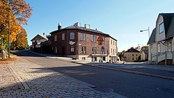

Kerron hieman Kauklahdesta. Olen itse asunut Kauklahdessa koko elämäni. Se oli pieni kylä mutta viimeisen viidentoista vuoden aikana se on kasvanut valtavasti. Kauklahdessa on rakennettu viiden vuoden aikana paljon uusia asuntoja.
Kauklahdessa on vain yksi uimaranta, josta tiedän. Se on Kallvikin uimaranta. Hyvin pieni ranta, jonne ei tosiaan 40 enempää ihmistä mahtuisi.
Tässä kuva
